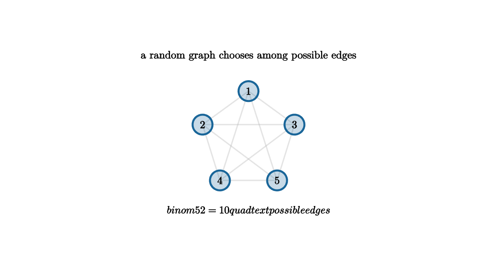

Random Graphs Begin With Counting
A random graph sounds probabilistic, but the first move is counting. With n labeled vertices, every pair of vertices is a possible edge. There are
possible edges. In the model G(n,p), each possible edge is included independently with probability p. The sample space contains
graphs, one for each choice of present or absent edges.

source
let Vertex = |pos, label| [
center{pos} fill{alpha{0.24} BLUE} stroke{BLUE, 3} Circle(0.16),
center{pos} Text(label, 0.62)
]
mesh scene = [
center{1.35u} Text("a random graph chooses among possible edges", 0.62),
stroke{alpha{0.35} LIGHT_GRAY, 2} Line([0, 0.78, 0], [-0.74, 0.24, 0]),
stroke{alpha{0.35} LIGHT_GRAY, 2} Line([0, 0.78, 0], [0.74, 0.24, 0]),
stroke{alpha{0.35} LIGHT_GRAY, 2} Line([0, 0.78, 0], [-0.46, -0.66, 0]),
stroke{alpha{0.35} LIGHT_GRAY, 2} Line([0, 0.78, 0], [0.46, -0.66, 0]),
stroke{alpha{0.35} LIGHT_GRAY, 2} Line([-0.74, 0.24, 0], [0.74, 0.24, 0]),
stroke{alpha{0.35} LIGHT_GRAY, 2} Line([-0.74, 0.24, 0], [-0.46, -0.66, 0]),
stroke{alpha{0.35} LIGHT_GRAY, 2} Line([-0.74, 0.24, 0], [0.46, -0.66, 0]),
stroke{alpha{0.35} LIGHT_GRAY, 2} Line([0.74, 0.24, 0], [-0.46, -0.66, 0]),
stroke{alpha{0.35} LIGHT_GRAY, 2} Line([0.74, 0.24, 0], [0.46, -0.66, 0]),
stroke{alpha{0.35} LIGHT_GRAY, 2} Line([-0.46, -0.66, 0], [0.46, -0.66, 0]),
Vertex([0, 0.78, 0], "1"),
Vertex([-0.74, 0.24, 0], "2"),
Vertex([0.74, 0.24, 0], "3"),
Vertex([-0.46, -0.66, 0], "4"),
Vertex([0.46, -0.66, 0], "5"),
center{1.15d} Tex("\\binom{5}{2}=10\\quad \\text{possible edges}", 0.6)
]The expected number of edges is immediate. Each possible edge contributes 1 if present and 0 if absent, so by linearity of expectation
This calculation is small, yet it captures the philosophy. Global structure begins as a sum of local indicators. Expected triangles, isolated vertices, connected components, and cliques can all be studied by counting candidate patterns and multiplying by the probability that the required edges appear.
source
param p = 0.32
let V = |pos, label| [
center{pos} fill{alpha{0.24} BLUE} stroke{BLUE, 3} Circle(0.15),
center{pos} Text(label, 0.62)
]
let E = |a, b, weight| stroke{alpha{0.12 + 0.75 * weight} ORANGE, 4} Line(a, b)
let Graph = |prob| [
E([0, 0.8, 0], [-0.78, 0.25, 0], prob),
E([0, 0.8, 0], [0.78, 0.25, 0], prob),
E([-0.78, 0.25, 0], [0.78, 0.25, 0], prob),
E([-0.78, 0.25, 0], [-0.48, -0.68, 0], prob),
E([0.78, 0.25, 0], [0.48, -0.68, 0], prob),
E([-0.48, -0.68, 0], [0.48, -0.68, 0], prob),
E([0, 0.8, 0], [0.48, -0.68, 0], prob),
V([0, 0.8, 0], "1"),
V([-0.78, 0.25, 0], "2"),
V([0.78, 0.25, 0], "3"),
V([-0.48, -0.68, 0], "4"),
V([0.48, -0.68, 0], "5")
]
"Probability"
mesh title = center{1.34u} Text("edge probability drives global shape", 0.64)
mesh graph = Graph(prob: $p)
mesh note = center{1.16d} Text("raise p to make dense patterns more likely", 0.62)
play Fade(0.7)
play Write(0.7)
"Sparse To Dense"
p = 0.78
play Lerp(1.3)
note = center{1.16d} Text("local edge choices create connected structure", 0.62)
play Trans(0.6)Counting triangles illustrates the method. There are binom(n,3) triples of vertices. A given triple forms a triangle when its three edges are present, which has probability p^3. Therefore
The same template works for any fixed pattern H: count the possible labeled copies of H, then multiply by p to the number of edges in H.
Random graph theory becomes surprising because properties can appear abruptly. When p is very small, isolated vertices dominate. Around p = 1/n, a giant connected component begins to emerge. Around p = (log n)/n, the last isolated vertices disappear with high probability and the graph becomes connected. These are threshold phenomena: small changes in edge probability create large structural changes.
Generating functions enter when we count components, degree distributions, and branching approximations. Near the sparse regime, the neighborhood of a vertex often looks like a branching process. The expected degree is roughly np. If np < 1, explorations tend to die out. If np > 1, a large component can grow.
The model is simple enough to teach and rich enough to power modern network science. Random graphs give baseline expectations for social networks, communication networks, biological interaction graphs, and algorithms on large sparse structures. When a real network has many more triangles than G(n,p) predicts, that excess becomes meaningful evidence of clustering.
The big lesson is that randomness depends on counting. Probability assigns weights to counted possibilities, and structure emerges when the weighted possibilities become overwhelmingly concentrated around a pattern.